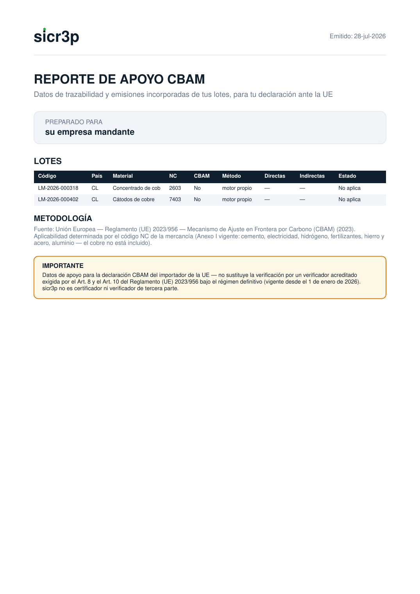

El Reglamento UE 2023/956 obliga al importador europeo a declarar — y pagar por — las emisiones incorporadas de lo que compra. Quien no entrega el dato con método, paga con los valores por defecto, más caros. sicr3p arma ese dato por lote, desde el expediente sellado de la carga.
El Mecanismo de Ajuste en Frontera por Carbono (CBAM) de la Unión Europea cobra en la frontera el carbono incorporado de ciertos productos importados, para igualar el costo que ya pagan los productores europeos. La cadena de exigencia baja completa: el importador le pide el dato a su exportador, y el exportador a toda su cadena aguas arriba.
| Productos alcanzados | Qué se declara |
|---|---|
| Hierro y acero, aluminio, cemento, fertilizantes, hidrógeno, electricidad — por capítulo/código NC. | Emisiones incorporadas: t CO2e por tonelada de producto, separando directas e indirectas, con el método de cálculo declarado. |
Sin dato propio, el importador usa valores por defecto — típicamente más altos que la realidad de un productor eficiente. Es decir: no medir cuesta plata. El exportador que llega con emisiones documentadas por lote negocia mejor.

El reporte CBAM: código NC, emisiones directas/indirectas por tonelada, método y faltantes — muestra con datos ficticios.
| Atributo | Cómo se logra |
|---|---|
| Trazable | Cada cifra baja hasta el eslabón y el documento que la originó, dentro del expediente sellado del lote. |
| Íntegro | La cadena de hash pública delata cualquier alteración posterior; el comprador puede verificarla sin cuenta, con el QR del expediente. |
| Reproducible | El cálculo declara su método y la versión de los factores usados — un tercero puede rehacer el número. |
| Honesto | Lo que falta se declara como faltante. Un reporte incompleto y honesto vale más ante la UE que uno completo e indefendible. |
El expediente del lote alimenta también el Pasaporte Digital de Producto (ESPR) y las declaraciones de debida diligencia OCDE para minerales — y del lado del mandante, el export Alcance 3 (ver carpeta de servicio 13). La trazabilidad se resuelve una vez y responde a todos los marcos.
sicr3p SpA · Antofagasta, Chile
contacto@sicrep.cl · www.sicr3p.cl
sicr3p — Carpeta de servicio: CBAM · Versión 1.0 · Agosto 2026 · Material informativo comercial; no constituye asesoría legal ni aduanera. sicr3p no es certificador, auditor ni autoridad.